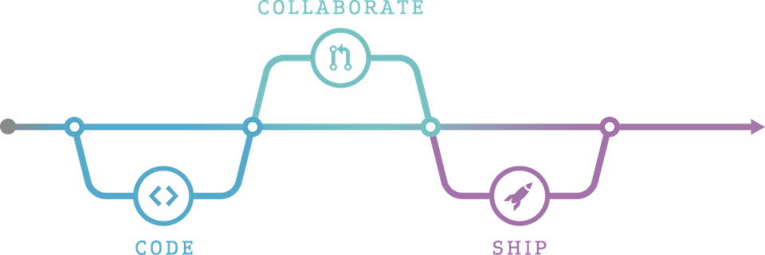
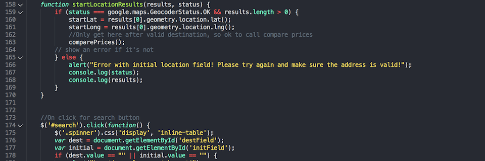

About
I was born and raised in Vicenza, Italy, and moved to Los Angeles in 2014. I'm currently studying Computer Science and Cybersecurity at the Viterbi School of Engineering, at USC. This summer I will be working for Deloitte as a Cyber Security Specialist.
I enjoy being an active member of the USC community - in no particular order:
- Managing Director of Scope, USC's elite software engineering club
- Project Manager at Code the Change, an organization dedicated to providing free software for non-profits
- Logistics Organizer at HackSC, USC's largest Hackathon
- Senior Producer of TrojanArcade, USC's gaming and entertainment news tv show
- Member of Lavalab, USC's premier product incubator
Education
- University of Southern California - 2014, B.Sc., Computer Science and Cybersecurity
- Massachussett's Institute of Technology - 2013, Research, Graph Theory
Work

I am a believer in free and open source software, and as such the majority of my work is available for download on Github. I have built production-ready applications in a variety of languages and mediums.
Languages
- JavaScript
- Swift
- C++
- Python
- Java
Technologies/Mediums
- Desktop (Electron)
- Desktop (Qt)
- iOS
- Chrome Extension
- Back-end API (Node)
- Slackbot
- APT Repository
Articles
A selection of articles I've written:
Contact
5 Days, 5 Projects

Over Spring Break 2017, I decided to build five products in five days. It was more of an exercise in my abilities than an actual attempt to make market ready applications - overall it was a rewarding experience, and helped me learn new technologies that I did not have previous experience with. The projects are listed below.
5 Days, 5 Projects
Other Projects
Additionally, I've worked on a few other personal projects, and contribute to open source software as much as possible.
- Hoverzoom
- PasteBinApp - iOS App to quickly upload to pastebin
- USC Directory Scraper
- USC Schedule Helper - Chrome Extension to add functionality to USC web registration
- DismissBlackboard - Chrome Extension to quickly dismiss all blackboard notifications
- BulkReddit - A website to quickly cache any subreddits text posts, for easy consumption while offline
- RandomComic - Shows a random comic from one of 6 websites. Customizable, responsive, and intuitive.
- Reddit Spam Filter - A dataset processed with a naive bayes filter to detect spam in incoming post titles
- ModClear - Chrome Extension to quickly clear all your modmail on reddit
- AddToAmex - Chrome Extension to add all available American Express offers to your credit card